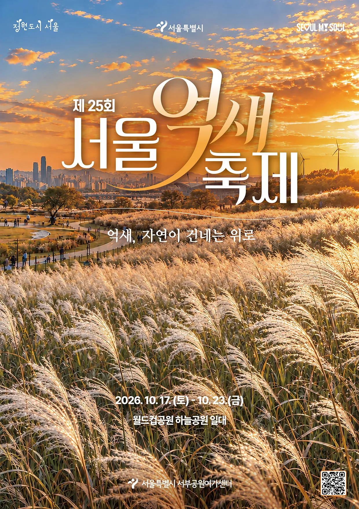
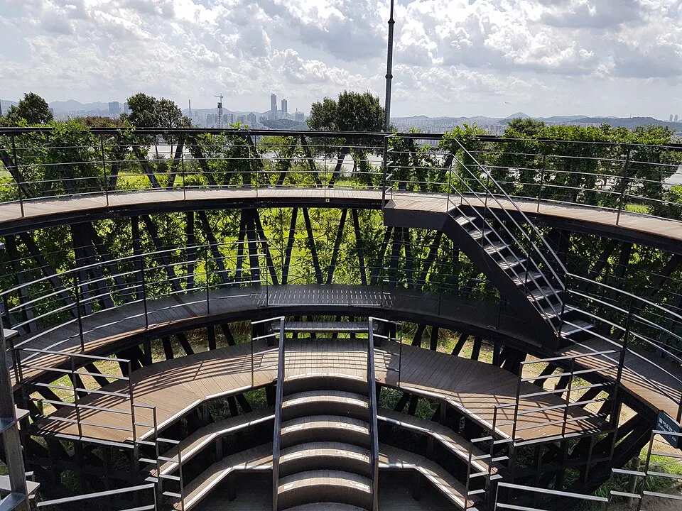
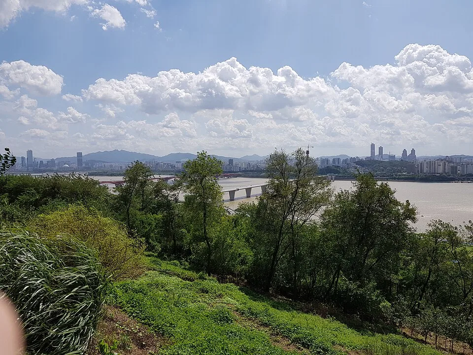
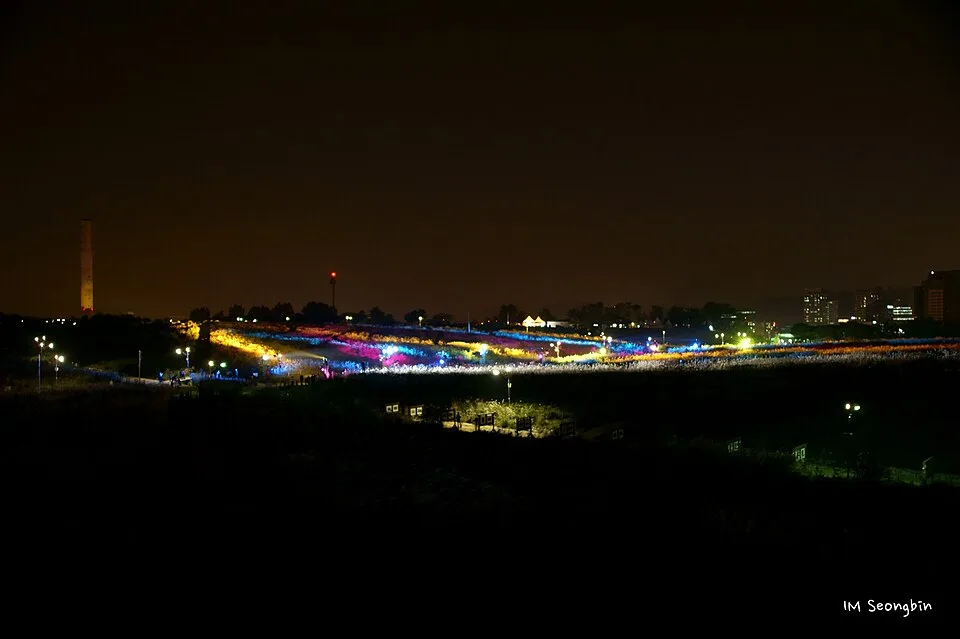
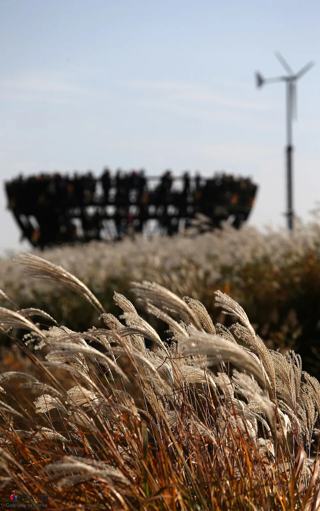
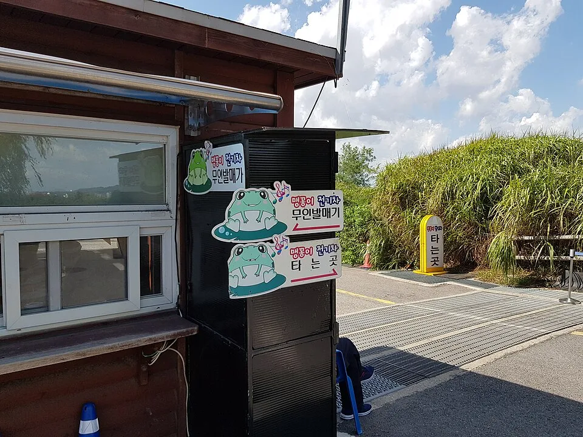
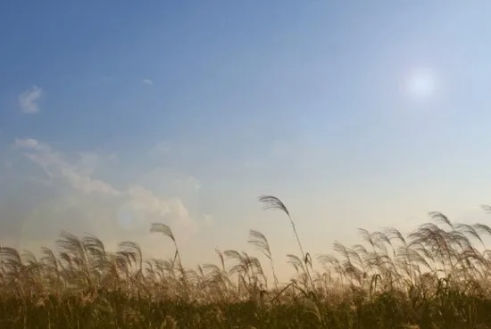

▲ 가을 하늘공원을 가득 채운 억새. 산책로를 따라 은빛 이삭이 물결친다 ⓒ Wikimedia Commons
서울 시내에서 억새를 보려고 지방까지 갈 필요는 없습니다. 상암동 월드컵공원 안, 하늘공원이 매년 10월이면 은빛 억새밭으로 바뀝니다.
다만 축제 기간은 딱 일주일입니다. 언제 가야 사람은 덜 붐비고 억새는 절정에 가까운지, 차로 갈 때 어디에 세워야 하는지는 미리 알아두는 편이 낫습니다.
1. 제25회 서울억새축제 — 언제, 어디서, 무엇을

▲ 2026년 10월 17일부터 23일까지 열리는 제25회 서울억새축제 공식 포스터. 부제는 '억새, 자연이 건네는 위로'다 ⓒ 서울특별시
2026년 서울억새축제는 제25회를 맞는다. 서울시 서부공원여가센터 발표에 따르면 운영 기간은 2026년 10월 17일(토)부터 23일(금)까지, 하루 10:00~21:00 운영된다. 장소는 월드컵공원 하늘공원 일대이고, 부제는 '억새, 자연이 건네는 위로'다.
| 항목 | 내용 |
|---|---|
| 회차 | 제25회 |
| 기간 | 2026년 10월 17일(토)~10월 23일(금), 7일간 |
| 시간 | 10:00~21:00 |
| 장소 | 월드컵공원 하늘공원 일대 (서울 마포구 상암동) |
| 입장료 | 무료 |
| 문의 | 서부공원여가센터 02-300-5574 |
축제 기간 중에는 개막식(캘리그라피 퍼포먼스·마술쇼 등)을 시작으로 억새 꽃다발 만들기 체험, 기념사진을 남길 수 있는 포토존, 소원을 적어 거는 소원존이 운영된다. 여기에 미디어 파사드 상영, 고보 라이트를 이용한 영상 상영, 아트 조형물, 라이브 버스킹, 싱잉볼 명상 프로그램까지 더해져 낮과 밤의 볼거리가 다르다.
펀서울에서 서울억새축제 프로그램 확인 가능2. 하늘공원은 원래 쓰레기 산이었다 — 월드컵공원 5개 공원

▲ 하늘공원 정상부의 원형 전망데크. 291개 계단을 오르면 만난다 ⓒ Wikimedia Commons
하늘공원이 있는 월드컵공원은 1978년부터 1993년까지 15년간 서울시민이 버린 쓰레기로 쌓인 난지도 매립지를, 2002년 한일 월드컵과 새 천년을 기념해 공원으로 되살린 곳이다. 전체 면적 270만㎡ 규모로, 평화의공원·하늘공원·노을공원·난지천공원·난지한강공원 5개 테마공원으로 나뉜다.
| 공원 | 특징 |
|---|---|
| 평화의공원 | 월드컵공원의 관문. 축제 기간 주차장으로도 쓰인다 |
| 하늘공원 | 옛 매립지 정상부. 가을이면 6만 평 억새밭이 펼쳐진다 |
| 노을공원 | 하늘공원 서쪽. 해질녘 조망과 캠핑장으로 알려져 있다 |
| 난지천공원 | 하늘공원 북쪽. 코스모스 등 계절 화훼단지가 있다 |
| 난지한강공원 | 하늘공원 남쪽. 한강 둔치와 캠핑장·수상 레저시설 |
하늘공원 정상까지는 291개 계단을 오르는 것이 기본 경로다. 평화의공원에서 구름다리를 건너 하늘계단으로 오르거나, 난지천공원 쪽 완만한 오르막길로 오를 수도 있다. 정상에는 원형 목재 전망데크가 있어, 억새밭 너머로 북한산·남산·한강까지 한눈에 들어온다.

▲ 하늘공원에서 내려다본 한강과 서울 시내. 억새밭 자체보다 조망이 더 인상적이라는 평도 많다 ⓒ Wikimedia Commons
📍 다른 지역 억새 명소가 궁금하다면
정선 민둥산, 포천 명성산 등 산 능선을 낀 전국 5대 억새군락지는 하늘공원과 접근 방식이 전혀 다릅니다. 자가용으로 들머리 주차장까지 간 뒤 걸어 올라가야 하는 경우가 대부분입니다.
지방 억새 명소별 절정 시기와 드라이브 코스는 가을 억새 드라이브 코스 바로가기에서 다뤘습니다.
3. 낮의 억새, 밤의 조명 — 야간 프로그램

▲ 해가 지면 하늘공원 능선 위로 조명이 켜진다. 미디어 파사드와 라이팅쇼가 야간 방문객을 불러모으는 이유다 ⓒ Wikimedia Commons (IM Seongbin)
서울억새축제는 10:00~21:00 운영으로, 해가 진 뒤에도 두 시간 가까이 즐길 수 있다. 지난 회차들에서는 저녁 시간대에 미디어 파사드 상영과 레이저·조명쇼가 하루 몇 차례씩 짧게 반복 운영됐고, 라이브 버스킹 공연도 야간까지 이어졌다. 2026년 정확한 회차별 시간표는 축제가 임박하면 펀서울·서울시 공식 채널에 공지되므로, 방문 전 재확인이 필요하다.
✅ 야간 방문 팁
· 해 질 무렵(17시 전후) 입장해 낮 억새와 밤 조명을 모두 보는 동선이 인기가 많다
· 저녁 시간대는 계단·전망데크에 사람이 몰린다 — 여유 있게 움직여야 한다
· 산 위라 해가 지면 기온이 빠르게 내려간다 — 겉옷을 챙긴다
4. 억새 절정은 축제 기간과 다르다

▲ 억새 이삭이 은빛으로 마르면 절정이다. 축제가 끝난 뒤에도 한동안 감상할 수 있다 ⓒ 해외문화홍보원(KOCIS)
축제는 10월 17일~23일에 열리지만, 억새 자체의 절정은 이보다 조금 늦다. 9월부터 이삭이 패기 시작해 10월 중순이면 은빛을 띠고, 10월 말~11월 초가 되면 색이 짙고 밀도가 가장 높은 시기로 접어든다.
| 시기 | 상태 |
|---|---|
| 10월 17일~23일 | 서울억새축제 기간 — 이삭이 은빛으로 올라오는 초입 단계 |
| 10월 말 | 축제는 끝났지만 억새는 더 짙어지는 구간 |
| 11월 초 | 밀도가 가장 높은 절정 — 축제 프로그램은 없다 |
즉 체험 프로그램과 야간 조명을 즐기고 싶다면 축제 기간에, 억새 자체의 밀도를 우선한다면 축제가 끝난 10월 말~11월 초에 가는 편이 유리하다. 하늘공원은 축제 종료 후에도 별도 통제 없이 개방된다.
5. 가는 법 — 대중교통과 주차, 뭐가 나을까

▲ 난지천공원 쪽 맹꽁이 전기차 승강장. 무인 발매기로 표를 사서 탄다 ⓒ Wikimedia Commons
카프리즘은 자동차 매체지만, 이 축제만큼은 대중교통이 강력히 권장된다는 점을 먼저 밝혀둔다. 서울시도 축제 기간 교통 혼잡을 이유로 대중교통 이용을 공식적으로 권고하고 있다.
| 구분 | 내용 |
|---|---|
| 지하철 | 6호선 월드컵경기장역·마포구청역 하차 후 도보 약 40분, 또는 공원 내 이동수단 환승 |
| 맹꽁이 전기차 | 난지천공원 주차장에서 탑승 가능. 무인 발매기 이용 |
| 자가용 | 평화의공원·난지천공원 주차장 우선 이용 — 축제 기간 극심한 혼잡 예상 |
부득이 차를 가져간다면 평화의공원 주차장과 난지천공원 주차장이 하늘공원과 가장 가깝다. 주차 요금은 10분당 소형 300원·중형 600원·대형 900원 구간이 기본이며, 행사 기간에는 별도 정액 요금이 적용되는 경우도 있어 현장 안내를 따라야 한다. 두 주차장 모두 축제 기간에는 오전 중 만차가 되는 경우가 많으므로, 이른 시간 도착이나 대중교통 병행을 권한다.
미래한강본부에서 난지한강공원 주차정보 확인 가능6. 주변 연계 코스 — 난지한강공원·노을공원·망원동

▲ 역광 속 억새 이삭. 하늘공원만 보고 돌아가기엔 주변에 볼거리가 많다 ⓒ Wikimedia Commons
하늘공원 하나만 보고 돌아가기엔 상암·망원 일대는 함께 묶을 곳이 많다. 남쪽 난지한강공원은 잔디밭과 자전거도로가 잘 갖춰져 있어 억새밭 산책 후 강변에서 쉬어가기 좋고, 서쪽 노을공원은 이름 그대로 해 질 무렵 조망이 알려져 있다. 북쪽 난지천공원은 계절마다 코스모스 등 화훼단지가 조성돼 억새와는 다른 색감을 볼 수 있다.
| 코스 | 내용 |
|---|---|
| 하늘공원 → 난지한강공원 | 도보 연결. 잔디밭·자전거도로에서 휴식 |
| 하늘공원 → 노을공원 | 둘레길로 연결. 해 질 무렵 조망 포인트 |
| 하늘공원 → 망원동 | 대중교통 또는 자전거로 이동. 망원시장에서 먹거리, '망리단길' 골목 산책 |
망원동까지 이어가려면 합정역이나 망원역 방면으로 이동해 망원한강공원을 지나 망원시장에서 닭강정·빈대떡 같은 먹거리로 마무리하는 코스가 흔히 추천된다. 하늘공원에서 도보로는 다소 거리가 있어 마을버스나 자가용 이동이 현실적이다.
✅ 서울억새축제·하늘공원, 가기 전 체크리스트
· 제25회 서울억새축제, 2026년 10월 17일(토)~23일(금) 10:00~21:00, 무료
· 하늘공원 억새밭 규모 약 6만 평, 정상까지 291계단
· 월드컵공원은 평화의공원·하늘공원·노을공원·난지천공원·난지한강공원 5개 공원으로 구성
· 억새 자체의 절정은 축제보다 늦은 10월 말~11월 초
· 대중교통(6호선 월드컵경기장역·마포구청역) 이용이 강력 권장 — 자가용은 평화의공원·난지천공원 주차장, 축제 기간 혼잡
· 난지한강공원·노을공원·망원동 망원시장까지 이어 붙이는 코스 가능
· 2026년 세부 프로그램·야간 라이팅 시간표는 공식 채널로 재확인 필요